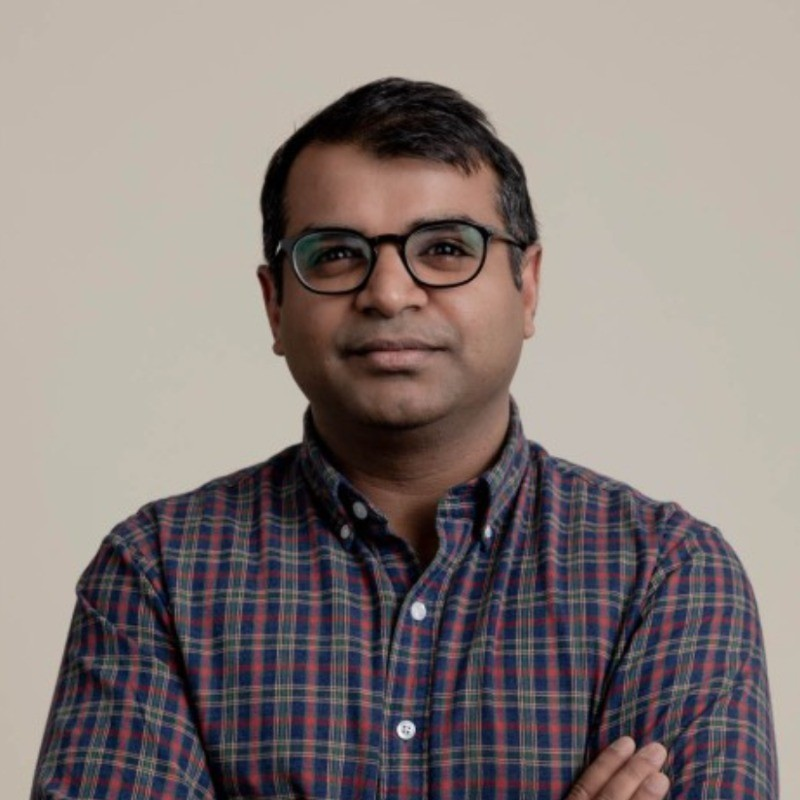

Amit Saraff
Copenhagen, Denmark

I lead a small team of engineers within Technology Platforms at Danske Bank. We explore and evaluate emerging technologies to understand where they can make a difference in banking.
My work has centered on distributed systems, storage, and infrastructure. Previously, I was at Mixpanel, Qualtrics, and Microsoft, where I worked on OneDrive and Azure.
I strive to create better connections between people, systems, and processes. Let’s build.
Publications & patents
-
APLUS: A Data Reduction Pipeline for HST/ACS and WFC3 Images
Wei Zheng, Amit Saraff, Larry Bradley, Dan Coe, Alex Viana, and Sara Ogaz.
A pipeline for processing Hubble Space Telescope images. PDF
-
Pre-provisioning server hardware for deployment on an edge network
US 12,212,456 · Issued 2025
-
Peer booting operating systems on an edge network
US 12,020,038 · Issued 2024
Away from work
-
10,000 steps a day
A year of walking, one day at a time.
-
Talisker 10
A visual history of a whisky label.